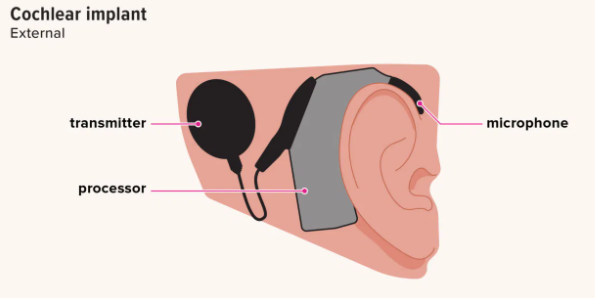
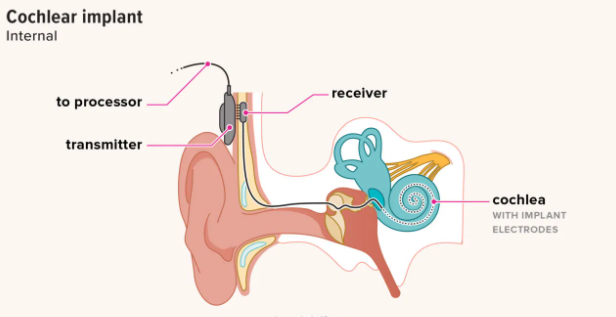

Syed Zaki Kazimi
Durham University
Whilst not a particularly new technology, cochlear implants have been a ground-breaking piece of tech for those hard of hearing in both ears and has been an essential technology for the deaf community.
The implant is an electronic device that receives sound waves via a microphone and converts them into digital signals which are sent to a transmitter. The transmitter communicates the digital receiver, which is located under the individual’s skin, behind their ear. The receiver converts the digital signals to electric impulse, which are communicated to the cochlear nerve, which then forward the impulse to the brain.
You can watch Teresa's story below to see how much the CI technology can help people with their life.
This not only improves the quality of life by being able to hear, but it also allows deaf individual hold jobs as they can talk to people, even when they cannot see their lips and can also use phones. At this point, you might ask, well why wouldn’t a deaf individual just get a hearing aid instead of an implant? Well it really comes down to the severity of a person’s deafness. Hearing aids are more ideal for individuals for mild to moderate hearing loss, and even though a hearing aid might help in some circumstances, it also doesn’t help with speech understanding.